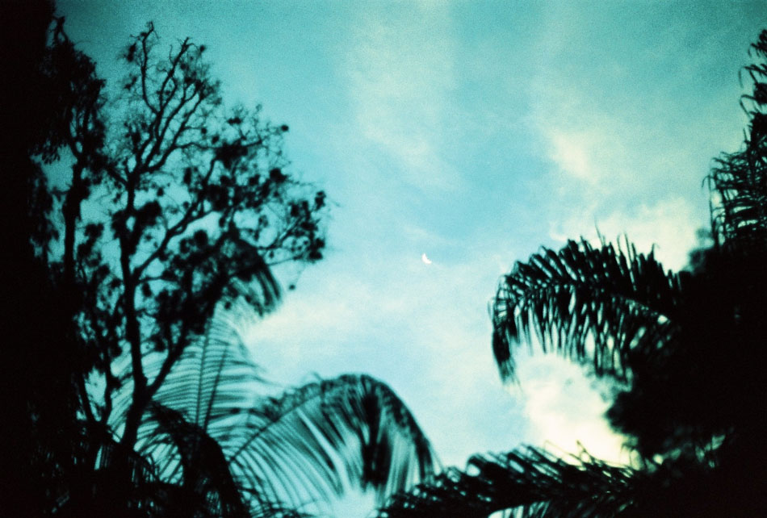
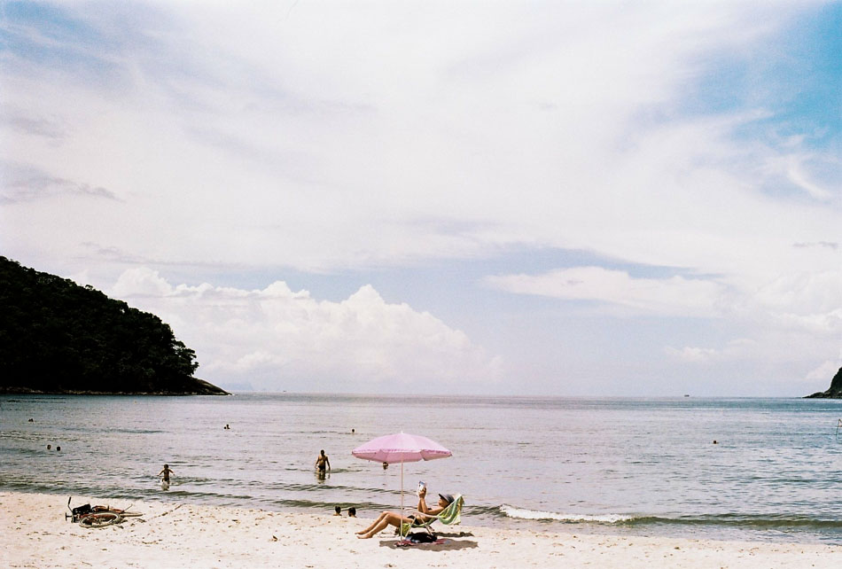
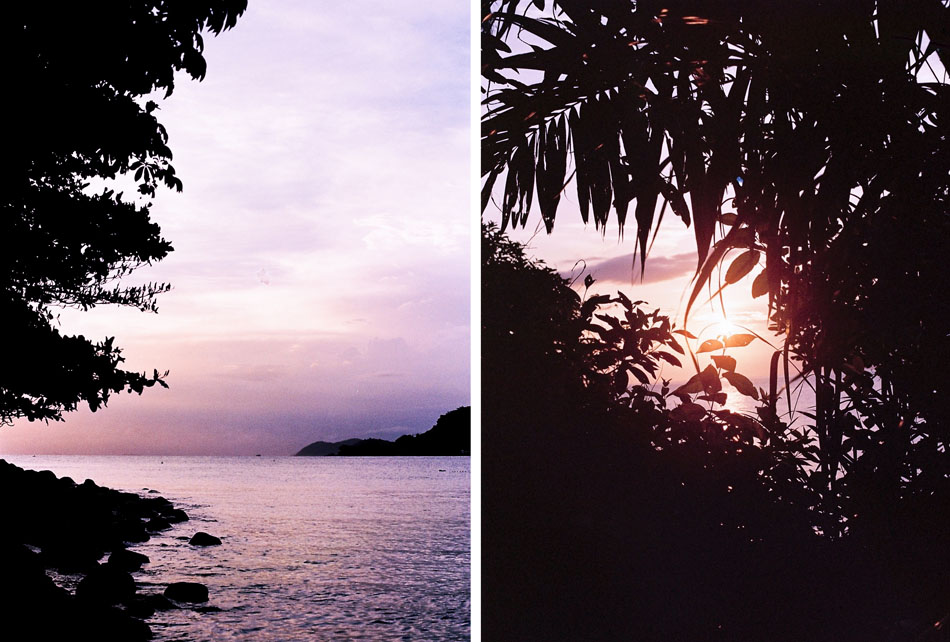
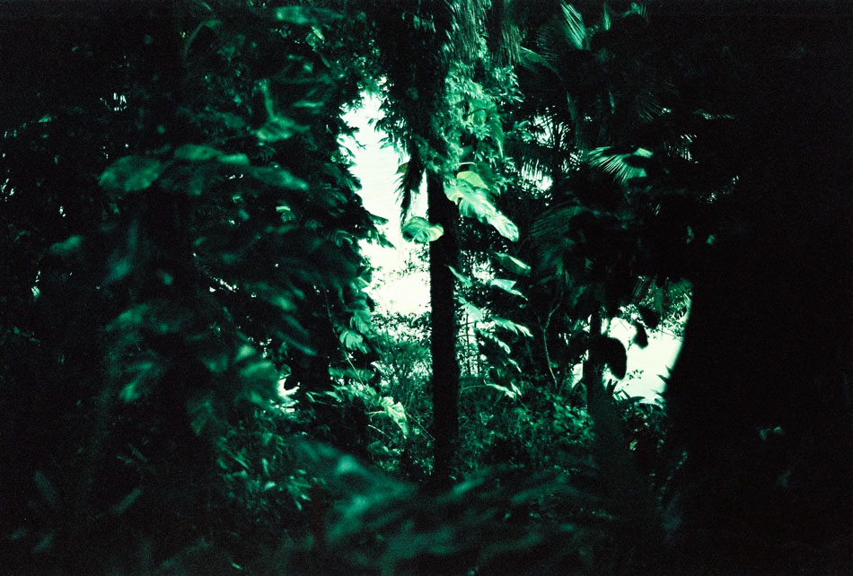

2016 has broadened my soul. Not because it was the best, but maybe the most dificult, and for sure the most transformative. Life, in its ways, made me trek some of my deepest marshes. I accepted the challenge with no fear and this trip inside myself made me realize how we are living in a paradigm where almost everything invites us to escape. It’s always easier to do something else rather than paying attention to what really matters in our lives. It seems that we are always doing what we want to do, but what if we are really doing exactly what everybody expects us to do? Everything changed for me when I understood that, in times of a sort of dictatorship of happiness and perfect formulas of living, looking directy at the pain in your eyes, and allowing yourself to feel what’s hurting you in that moment, without necessarily identifying yourself with that feeling as being who you are, but rather as an experience you are living in that moment. And suddenly what scares you goes away when it´s the right time.
It’s always easier to do something else rather than paying attention to what really matters in our lives. It seems that we are always doing what we want to do, but what if we are really doing exactly what everybody expects us to do?
We are living this insanely fast reality so how can we even allow ourselves to suffer for more then 30 seconds? I ended this troubled year of 2016 in a paradise called Barra do Sahy, a tiny and magical beach in the Northern coast of São Paulo. And it wasn’t a super big, or complex, or a far far away trip, but it was, with no doubt, one of the most healing experiences of my life. Because it was simple. I’m getting kind of annoyed of this new way of living, where every second has to be the most incredible of our entire life. I’ve always prefered the nature of the small things. Like contemplating the way the wind blows in the forest when the sun is setting, while the birds beautifully sing on my is one of my favourite pleasures in life. Are birds ever in a hurry? I can’t imagine that. When I got there, to this mystic meeting of the Atlantic Rainforest with the ocean, I couldn’t stop thinking that the city can get us away from what truly puts our heart on fire in a week or two. So I decided to travel in a diferent way this time.
When I got there, to this mystic meeting of the Atlantic Rainforest with the ocean, I couldn’t stop thinking that the city can get us away from what truly puts our heart on fire in a week or two. So I decided to travel in a diferent way this time.
I took my camera to walk with me in the first days, we had some really good times together, but as time was passing by and I was getting more and more connected to that powerful nature that was around me, this need to capture everything just vanished. I realized I was just having this perfect routine of going to the beach in the morning, swiming in the ocean, making a really delicious meal for lunch, and contemplating the afternoon’s rain, that made everything look much greener after it disappeared. Every part of my day was so full of life and nothing really incredible was going on. Just the course of nature. The cycle of life in the forest is so beautiful and perfect. Everything is always where it should be. And nothing is out of time. There’s a beautiful poem of Nayyirah Waheed that says: “Expect sadness like you expect rain, they both cleanse you”. I think this explains in the most perfect way this healing experience that I lived those days. Because after a really painful year, I was suddenly feeling more love that I had ever felt in my entire life. Sometimes we just have to be patient, like nature. Because any and every wound needs time to heal. We have to grief. And if we allow ourselves to not numb the pain, and feel the storm, we authorize the pleasure to be more intense when the lull comes. If we don’t run away from the shadow when everything gets dark, love can shine with even more power when the sun rises. And life can get more tasty. More precious. More truthful. There’s so much beauty in the whole truth.
Every part of my day was so full of life and nothing really incredible was going on. Just the course of nature. The cycle of life in the forest is so beautiful and perfect. Everything is always where it should be. And nothing is out of time.
After this deep journey inside my own nature I realized that there is a light that never goes out. But it comes from silence. And I know that is always easier to stay in the comfort of noise, than stare at what we don’t want to see. But, you know, it’s worth. Inspiration can be a truly precious thing, but there are some times in our lifes that we really need to dive deep in our own ocean. Times when only you can see the way where the light shines. Because at the end of the day, only you know about your reality, only you will know what is truly good for you, only you know the life that you want to live. And if we can empower ourselves with our own history, our life experience, everything that we already lived, loved and suffered, it’s much easier to find the path we are looking for. If we can connect with the essence of our soul, it’s more possible to get out of the perennial shortage of the system that we live in and see the power of abundance that already exists inside of us. And if we can overcome the idea that everything is still missing in our lives, we can truly see what we’ve already conquered and achieved.

Inspiration can be a truly precious thing, but there are some times in our lifes that we really need to dive deep in our own ocean.
